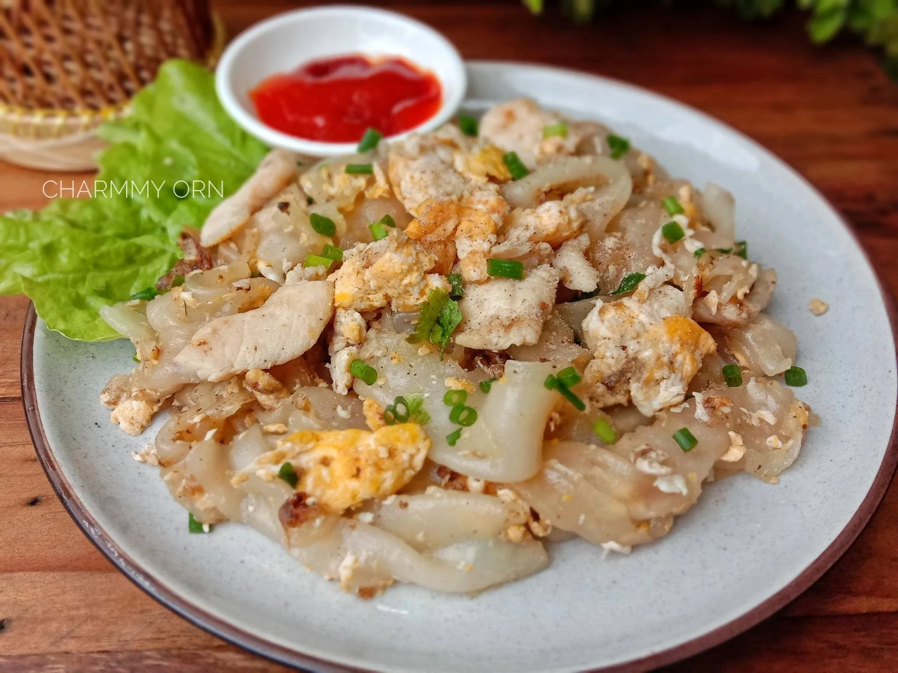

Instant Noodle

"Thai Stir-fried Rice Noodles featuring tender chicken and vibrant vegetables. 🍜✨
"A savory dish featuring tender chicken and stir-fried rice noodles, flavored with a delicious blend of sauces and vegetables."
Ingredients
- Rice noodles (200g)
- Chicken breast or thigh (250g), thinly sliced
- Carrots (1-2), julienned
- Spring onions (2-3), chopped
- Garlic cloves (2-3), minced
- Soy sauce (2 tbsp)
- Oyster sauce (1 tbsp)
- Fish sauce (1 tbsp)
- Sugar (1 tsp)
- Vegetable oil (2-3 tbsp)
Steps
- Cook rice noodles and prepare ingredients.
- Marinate and cook chicken, stir-fry with vegetables.
- Combine with noodles, sauces, and seasonings.
- Stir-fry until heated through, garnish with spring onions, and serve hot.